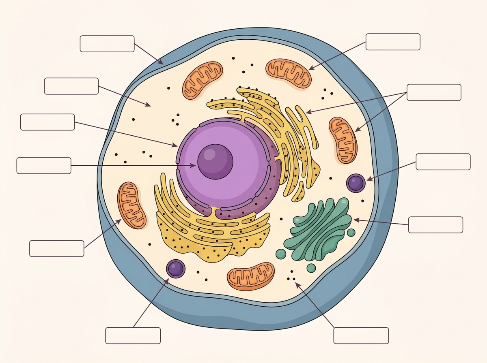
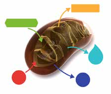

✕
✏️ 1. Dibuixa una cosa viva molt petita del teu cos. Com creus que és?
✏️ 2. Pots estar molts dies sense menjar. Però només uns minuts sense respirar. Què creus que passa si NO respires? Acaba la frase:
Si no respiro, el meu cos
✕
🔗
La pregunta d'avui: per què el teu cos necessita menjar i aire? La resposta és molt petita: està dins de cada cèl·lula.
✕
✕
📖 Per llegir
La cèl·lula és la cosa viva més petita. Tot el teu cos està fet de cèl·lules: la pell, els músculs, la sang...
Una cèl·lula té parts. Avui en mirem 3: la membrana, el nucli i el mitocondri.
✕

Una cèl·lula i les seves parts
✏️ Obre la web de Biologia. Busca aquestes 3 parts. Marca la casella ✔ quan trobis cada una:
✕
🛡️La membrana — la "pell" que envolta la cèl·lula✕
🔵El nucli — la bola del mig que mana✕
⚡El mitocondri — on es fa l'energia
✕
✕
📖 Per llegir
Per estar viva, la cèl·lula necessita energia. L'energia es fa dins el mitocondri.
El mitocondri necessita 2 coses: el menjar (un sucre que es diu glucosa) i l'aire (l'oxigen).
🍎 Menjar
+
💨 Aire
→
⚡ Energia
✕

Dins el mitocondri: el menjar + l'aire fan energia
✕
🍎 MENJAR
+ 💨 AIRE
→ ⚡ ENERGIA
✕
✅ Pensem en 3 passos — EXEMPLE FET Per què ens morim si no respirem?
1
Què necessita el cos per funcionar?
⚡ ENERGIA
colors
2
On es fa l'energia?
al nucli
al MITOCONDRI
3
Si no respires, què li falta al mitocondri?
l'AIRE (oxigen)
l'aigua
💡 Sense aire → el mitocondri no pot fer energia → ens morim. Aquest exemple ja està resolt. Ara ho faràs tu a la Secció 3.
✕
✕
🍎 MENJAR
+ 💨 AIRE
→ ⚡ ENERGIA
✕
✏️ Pensem en 3 passos — MARCA TU Per què ens morim si no mengem?
1
Què necessita el cos per funcionar?
⚡ energia
colors
2
On es fa l'energia?
al nucli
al mitocondri
3
Si no menges, què li falta al mitocondri?
el menjar (glucosa)
el so
✏️ Ara escriu UNA frase. Comença així:
Si no menjo, el mitocondri no pot
✏️ Encercla què fa cada part de la cèl·lula:
Pensa: la membrana és la "pell", el nucli "mana", el mitocondri fa "energia".
✕
🛡️
Membrana
deixa entrar i sortir coses
fa l'energia
🔵
Nucli
mana i guarda l'ADN
deixa passar l'aigua
⚡
Mitocondri
fa l'energia
protegeix la cèl·lula
✕
📖 Per llegir — i les plantes?
Els animals han de menjar altres éssers vius. Les plantes NO mengen: fabriquen el seu menjar amb la llum del sol. Això es diu fotosíntesi.
✕
✏️ Encercla: una planta fa el seu menjar amb la llum del
sol
televisor.
✕
📚 Tasca per a casa — per a la Sessió 2
✕
1
🎨 Dibuixa de memòria: sense mirar els apunts, dibuixa una cèl·lula amb les 3 parts (membrana, nucli, mitocondri). Escriu el nom de cada part.
✕
2
🥚 Posa un ou en vinagre (per a la S2): posa un ou sencer dins un got amb vinagre blanc. Tapa'l i deixa'l 48 hores. Mira què li passa a la closca.